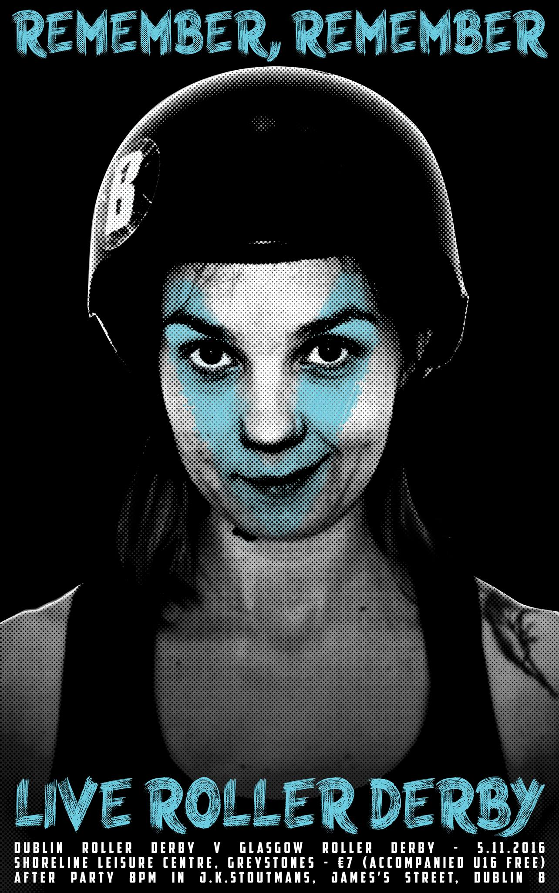

Glasgow cross the Irish Sea: Dublin v Irn Bruisers
Dublin Roller Derby have been a very busy league this year - earlier on, as we reported, they joined Auld Reekie and Newcastle at Gold Coast's Beach Brawl in Florida. Last weekend, they went across to play Middlesbrough Milk Rollers and Hot Wheel Roller Derby [as we reported in our roundup]. This weekend (as we will be reporting), they're hosting a triple-header for their B-team.
And on November the 5th, they're hosting again, as Glasgow Roller Derby travel across to Ireland to take them on.

Glasgow have had a difficult year, and Dublin Roller Derby are flush with increased confidence after their performance in the US: Flat Track Stats predicts a 90% win probability for the home team. SRD Rank (using the 1 October rankings*) agrees, and also concurs with FTS's approximate prediction that Dublin should score about 70 to 75% of the total points. That said, Glasgow's Irn Bruisers have been working hard to rebuild, and they may still surprise us.
Doors open at 12pm for 1pm start. Hosted at Dublin Roller Derby's usual venue, Shoreline Leisure Greystones, Dublin.
Tickets: €7 (under 16's free, accompanied) on the door.
*Our next ranking calculation will use the 1 November data, but it obviously can't exist yet. We'll update our prediction here before the bout!